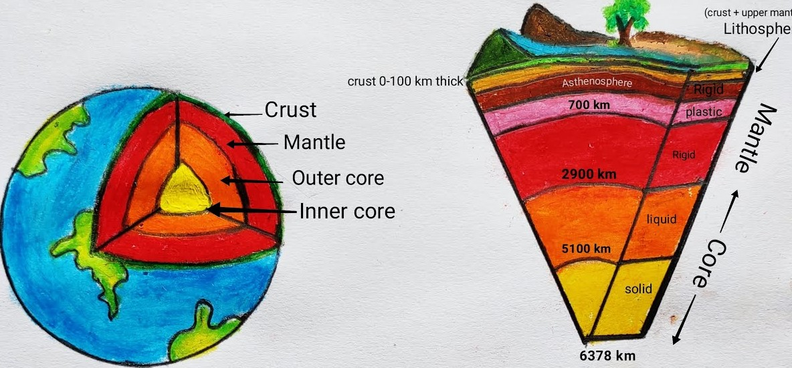
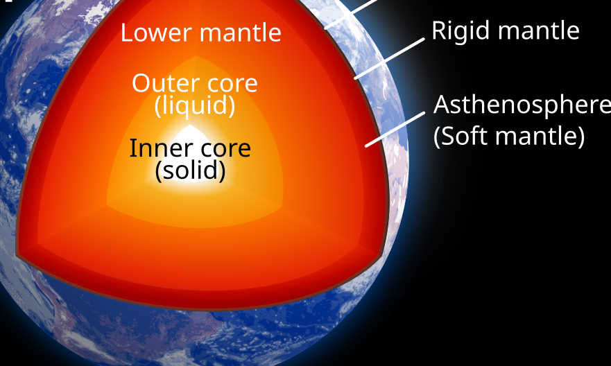

Structure of Earth
Crust

The crust is the outermost layer of the Earth and the one we live on. It is the thinnest layer, making up less than 1% of Earth’s total volume. Despite its thinness, it is incredibly important. The crust is made mostly of solid rocks such as granite (on land) and basalt (under the ocean). It ranges in thickness from about 5 kilometers under the oceans to 70 kilometers beneath mountains. The Earth's crust is divided into large sections called tectonic plates, which float on the semi-fluid layer of the upper mantle. These plates move slowly, and their movement causes natural phenomena such as earthquakes, volcanic eruptions, and the formation of mountains. There are two types of crust: Continental crust: Found under land; thicker but less dense. Oceanic crust: Found under oceans; thinner but denser. The crust contains many natural resources like minerals, soil, coal, and oil, which are vital for human civilization. It also supports ecosystems, agriculture, and human settlements. Although the crust seems stable, it is always changing over long periods due to erosion, weathering, and plate tectonics. Understanding the crust helps scientists predict geological events and manage Earth's resources more effectively.
Mantle
The mantle is the thickest layer of the Earth, located between the crust and the outer core. It extends from about 35 kilometers to 2,900 kilometers deep. The mantle makes up about 84% of Earth’s volume and consists mainly of solid and semi-solid rock, rich in silicate minerals containing elements like magnesium and iron. The mantle is divided into two parts: The upper mantle, which includes the asthenosphere—a soft, flowing layer that allows tectonic plates above to move. The lower mantle, which is hotter and more rigid due to high pressure, though it still flows very slowly. Heat from the deeper parts of the Earth rises through the mantle in a process called convection. This movement causes the shifting of tectonic plates on the crust, leading to earthquakes, volcanic eruptions, and continental drift. Though it’s mostly solid, the high temperature (up to 3,700°C) and pressure make the mantle behave like a very slow-flowing liquid over geological time. The mantle is crucial for transporting heat from the Earth’s interior to the surface. Understanding the mantle helps scientists learn more about how the Earth’s interior works and how surface changes, like earthquakes and mountain formation, happen over time.
Outer Core

The outer core lies beneath the mantle and surrounds the inner core. It extends from about 2,900 kilometers to 5,150 kilometers below the Earth’s surface. Unlike the solid mantle and inner core, the outer core is completely liquid, composed mainly of molten iron and nickel. Temperatures in the outer core range from 4,000°C to 6,000°C. These high temperatures keep the metal in a fluid state. The movement of this liquid metal, driven by heat from the inner core, creates electric currents. These currents generate Earth’s magnetic field, a process known as the geodynamo. The magnetic field is essential to life on Earth. It protects the planet from harmful solar radiation and cosmic rays by deflecting charged particles from the Sun. Without the magnetic field, life on Earth would be at great risk. The outer core also plays a role in seismic wave behavior. Since it’s liquid, S-waves (shear waves) from earthquakes cannot pass through it, helping scientists study Earth’s internal structure. Studying the outer core helps geophysicists understand how Earth’s magnetism works and how the planet has evolved over time. Despite being inaccessible, we learn about it through seismic studies and computer simulations.
Inner Core
The inner core is the deepest and most central layer of the Earth. It starts at a depth of about 5,150 kilometers and extends to the Earth’s center at around 6,371 kilometers. Unlike the outer core, which is liquid, the inner core is solid, made mostly of iron and a small amount of nickel. Despite the extreme temperatures—estimated to be around 5,500°C to 6,000°C, similar to the surface of the Sun—the inner core remains solid due to the enormous pressure from the layers above. This pressure is so intense that it prevents the metal from melting, even at such high heat. The inner core is thought to be slowly growing as the outer core cools and solidifies over time. Some scientists believe the core has two parts—an inner inner core and an outer inner core—with different crystal alignments. The inner core also plays a role in Earth’s magnetic field. While it doesn’t generate the field directly, it influences the flow patterns in the outer core that do. Though humans cannot reach the inner core, scientists study it using seismic waves from earthquakes. These waves change speed and direction depending on the materials they pass through, helping us understand Earth’s hidden interior.